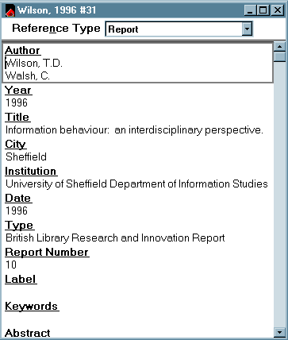
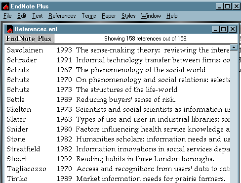

Software Reviews
EndNote Plus 2.3 (Enhanced reference database and bibliography maker), with EndLink 2.1 (Link to on-line and CD-ROM databases). Berkeley, CA: Niles & Associates, Inc., 1997. … 3" discs, two manuals (EndNote, 356 pp., EndLink, 90 pp.) (UK supplier: Cherwell Scientific Publishing, The Magdalen Centre, Oxford Science Park, Oxford, OX4 4GA)
EndNote is a package for creating bibliographies, embedding citations of bibliographical references in the text of papers and automatically creating bibliographies at the end of papers. EndLink is a system for downloading files from on-line or CD-ROM database searches and saving them as EndNote files.
EndNote is user-friendly, and the key to EndNote’s usability are the templates (or reference types) and styles: the former for different kinds of document references (journal article, book, report, thesis, etc.), the latter for the output format for a particular journal style. The ready-made templates will be sufficient for most needs, but I found that they needed to be modified slightly to make them suitable for my customary way of doing things. For example, the template for Conference Proceedings provides a field for Location of Conference, but not for place of publication of the proceedings, and it is not immediately clear how to enter an entire conference, as distinct from a paper delivered at a conference. Similarly, the template for Book Section has a field for the author of the section, but not, as far as I could see, for the author of the book. Figure 1 is an example of a template for a Report.

Figure 1: Report type template
Another lack is that of a reference type for electronic documents such as World Wide Web pages: I tried the mailing list to try to find out if anyone had developed such a template, but without success. This is a need that you can satisfy yourself, to a limited degree, since there is one "Unused" reference type that you can define yourself. Beyond this one spare type, you can also take over and modify other types that you may never need to use: for example, if you work in a field in which you are unlikely ever to need to cite patents, you can modify that reference type and use it for some other category of material. However, these are the only ways in which you can add new reference types and for some people it may not be enough.
As each reference is saved it is added to the list of references in the main window, which shows author’s surname, date of publication, and as much of the title as can be displayed in the available window. Figure 2 shows part of a listing. Clicking on a reference brings up the details in the appropriate template for further editing of any item.

Figure 2: Main bibliography listing
There are 15 reference types, from Journal Article to Map, Artwork and Patent - but nothing for Web pages or other Internet publication media such as e-mail messages and news-list contributions. However, there is a mailing list devoted to EndNote, from which you can seek advice on what to do. Just click on the following link and enter "sub endnote-interest your name" in the body of the message, leaving "Subject" blank endnote-interest@niles.com.
Further information on updates and amendments to EndNote can be found at the company’s Web site at: http://www.niles.com/ or at the UK site at Cherwell Scientific Publishing.
If you already have a bibliography in machine readable form, you can transfer it to EN in various ways: entirely automatically if it is in a recognized on-line or CD-ROM format, almost automatically if you put in the field codes used by the UNIX database system, Refer, or by copying the individual references into successive Title fields and then cutting and pasting the appropriate parts of the reference into the other fields. Any method other than the purely automatic is pretty tedious! For example, putting in the Refer field codes to 52 items (with judicious use of the Find/Replace function of Word where possible), transferring the resulting text file into EN and then tidying it up took just over one hour. I doubt if much could be knocked off this rate, even if you were highly proficient: the advantage is that, once the records have been transferred, they are there to be used whenever you need them.
Incorporating a downloaded file from an on-line search service is facilitated by the use of filters in EndLink, now bundled with EndNote. The filters cover a wide variety of on-line and CD-ROM services including BIDS, DIALOG, STN and DIMDI, as well as library systems (HOLLIS at Harvard, FOLIO at Stanford), MARC records, and Silver Platter. The filters are editable, so you can create a filter for another database not in the pack.I tried the BIDS filter and it worked perfectly: some initial editing of the search output is necessary, to ensure that each field is on a separate line, but once that is done the references flow into an existing EndNote database without any problems.
Where EndNote scores is in its ability to integrate with word-processors. Lotus Ami Pro and various versions of Word for Windows and WordPerfect are supported, the latest being Word for Windows 97, which has just been released.
You use the add-in by opening your bibliography at the same time as you write the text and clicking on the references you need after using an inserted drop-down menu. This results in a temporary citation being embedded in your text in the form [Heimlick, 1990 #15] - the number being the record number in the bibliography, which is usually not shown. At the end of your preparation, you choose "Format Bibliography" from the drop-down menu and the system scans the text, replaces the temporary citations with the style you have selected and simultaneously generates the bibliography at the end of the paper. Provided that you are rigorous in maintaining your bibliography, this is a very time-saving way of doing the job. When I used EndNote and EndLink with Word 97 for Windows 95, it worked like a dream.
In conclusion, EndNote with EndLink is a straightforward packages that is easy and time-saving to use and it meets its functional objectives perfectly.
Late News: EndNote has now been equipped with a Web publishing style - see the page at http://www.niles.com/home/en_and_www.htm, which comments:
If you are publishing cited works on the World Wide Web, EndNote can be used to take
advantage of certain Hypertext Markup Language (HTML) features. Using the HTML style, or
any similar HTML-aware style, EndNote can create hypertext links between in-text citations and
the references in a document's bibliography. It can even be used to link the bibliographic
references to full text articles or other related information available on the WWW.
Professor Tom Wilson
|